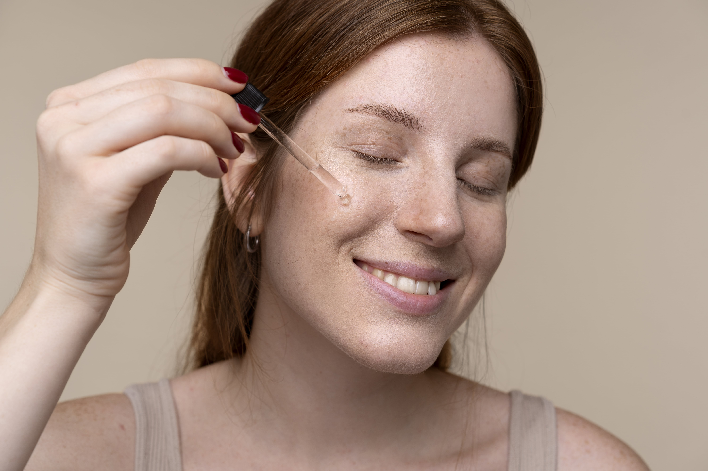
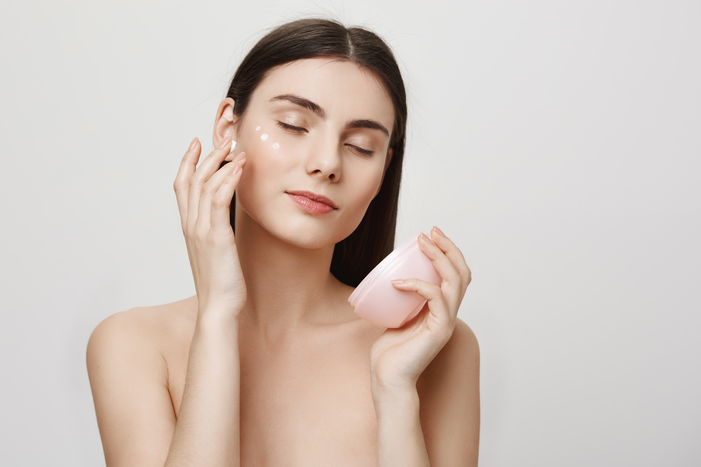
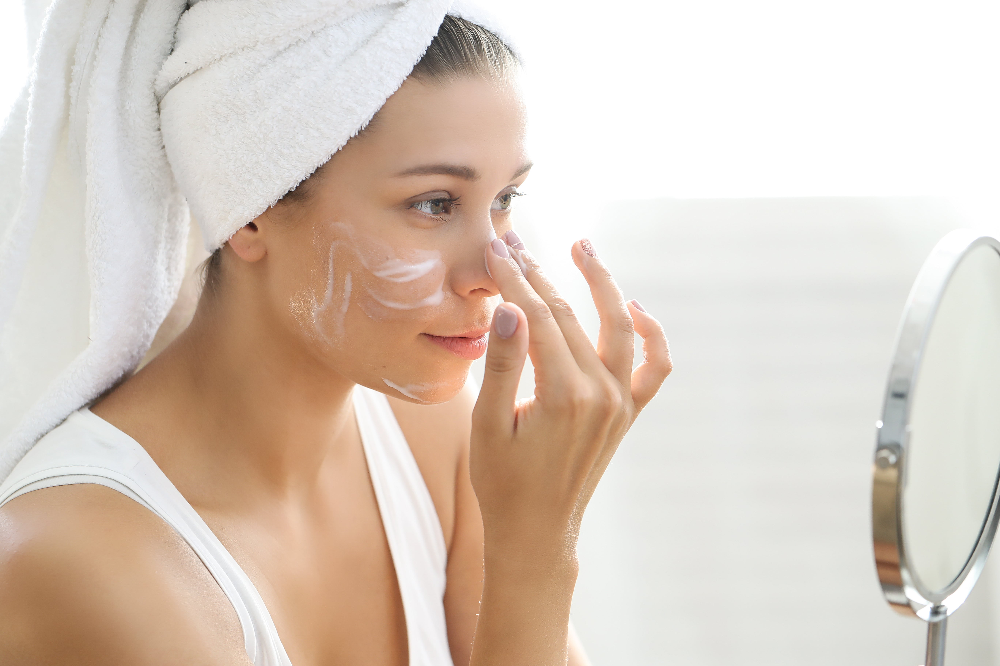

Rutina de limpieza
Pasos a seguir:

1.- Limpieza: Esta es la parte que nunca nunca puede faltar, aun si no tienes una rutina de skincare definida. Con esto retiras las impurezas que pudieron haberse acumulado durante la noche. Te recomendamos que en este momento del día laves tu cara o bien con jabón neutro, o con algún gel especial.
2.- Mascarilla: Es importante poner un tratamiento sobre tu piel para darle vitaminas y algunas sustancias que pudieran hacerle falta. Los serums son ideales para este paso y existen para todo tipo de piel según tus necesidades.

3.- Tonificar: Esta es una de las partes más importantes de la rutina, ya que un tónico nos ayudará a balancear el pH de nuestra piel, lo que hará que esta reciba de mejor manera los productos que aplicarás en los pasos siguientes.

4.- Hidratar: No importa si tienes la piel seca, mixta o muy grasa, este paso no lo debes omitir jamás, pues, si tienes la piel grasa el no hidratarla sólo hará que tu cuerpo emita más grasa. Simplemente tienes que buscar algún producto que sea ideal para ti. Puede ser aceite, crema o gel, pero nunca tu crema para el cuerpo. Para aplicar tu humectante, coloca producto con el dedo alrededor de tu cara, evitando el contorno de ojos y luego esparce hacia arriba gentilmente. Hidrata tus labios con un bálsamo labial.

5.- Proteger: Este es uno de los pasos más importantes de la rutina, uno que no puede faltar absolutamente nunca. Hay que proteger la cara con un bloqueador con un mínimo de factor de protección solar mínimo de 30 hasta llegar al 50. Es importante que busques uno especial para la cara para que no deje rastros blancos ni se sienta en exceso grasoso.